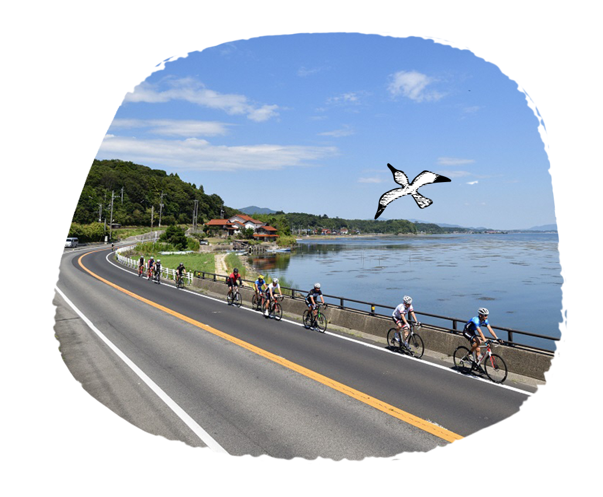

- 松江市位於島根縣的東北部，其中最有名的景點 為「松江城」，2015年7月獲指定為日本國寶， 是日本全國僅存的12座天守之一。 歇山頂博風板的屋簷如同翅膀張開，故別名「千 鳥城」。從最上層的望樓遠眺宍道湖周圍，風景 絕佳，城山公園內自然景色四季分明，美麗怡人。
- 由志園由志園位於大根島的中央，映照著出雲地方的風景與傳說，是一座被稱為「出雲之國的箱庭」的池泉回遊式日本庭園。一整年都可以欣賞到雍容華貴的牡丹，除此之外四季皆有不同花卉可以觀賞。江戶時代，大根島作為朝鮮人蔘的產地而聞名國際。在復原了江戶時代人蔘方役所的長屋門的館內，可以試飲人蔘茶，歡迎前來體驗大根島的歷史與文化。
- 堀川遊覽船乘著小船遊覽松江，感受歷史、自然、人文等各式風情。圍繞著國寶松江城的護城河，仍保留著400年前建城時的風貌。乘著小船遊覽護城河，在50分鐘的「堀川遊覽」中，您可以感受松江城下令人懷念的日本風景，尋訪小泉八雲因緣之地。在建城後穿梭時光400年，至今仍保有當時的面貌，歡迎前來感受自然風光、四季風情，在此盡情享受護城河之美。
- 八重垣神社供奉傳說中打敗八崎大蛇救出公主的神話英雄素盞鳴尊和女主角稻田姫夫婦。神社深處的樹林有據說能占卜姻緣的「鏡池」，也是結緣聖地之一。
- 松江城(國寶)1607年松江藩藩主堀尾吉晴開始建城，於1611年完成。由於屋頂的形狀宛如千鳥展翅一般，所以又名「千鳥城」。以桃山時期雄大宏偉的建築樣式為其特徵，是全國現存的12座天守閣之一，也是山陰地區唯一一座現存天守閣，2015年更被指定為日本第5座國寶天守閣。
- 玉造溫泉擁有1300多年歷史的玉造溫泉，在「出雲國風土記」中曾記載一段描述「泡一次可使肌膚恢復年輕光華，再泡一次則能治百病」，其效果非常神奇，當時被世人稱為神之湯。而温泉泉質中的弱鹼性、硫酸鹽、矽酸等成分能給予滋潤肌膚效果，宛如泡在化妝水般的感覺，因此又有「美肌之湯」之稱，深受女性們地歡迎!一定要來體驗。
- 宍道湖宍道湖的夕陽被選為「日本夕陽百選之一」，也是「水之都‧松江」的象徵。除此之外，日落的方向是諸神之故鄉「出雲之地」(出雲大社等)，從雲彩的縫隙中照耀在湖面上的陽光令人感到莊嚴。 此處由大自然形成的山明水秀，加上宍道湖的夕陽帶給我們難以言喻的平靜心情。
- 松江花鳥園松江花鳥園位於宍道湖畔，園內有加蓋屋頂的步道，是一座全天候型的花鳥主題樂園。在日本國內規模最大的溫室花園裡，以秋海棠及倒掛金鐘為中心，約1萬株的鮮花四季綻放。此外，鳥類園區則有貓頭鷹及企鵝、熱帶鳥類等多達90種，共400多隻的鳥類，期待著與您相會。
- 月照寺月照寺為歷代松江藩主松平家的菩提寺。現已被指定為國家史蹟，境內除了有各藩主的墳墓，還有唐門、於小泉八雲隨筆中登場的巨大烏龜形壽藏碑、與松平不昧公頗具淵源的茶室等等，大量保存了作為藩主菩提寺的遺物、遺跡，作為一個兼具歷史與信仰的寺廟深受眾人喜愛。在6月中旬至7月中旬之間，境內都會盛開美麗的繡球花，許多人會造訪此處，於靜謐莊嚴的歷史氣氛中，欣賞綻放的花朵。
- 美保神社美保神社是惠比壽神的總社。大黑天(出雲大社)和惠比壽神(美保神社)是父子神，據說參拜兩位神靈即可帶來良緣，參拜者絡繹不絕，當地人自古時就崇拜神明，繼承傳統儀式活動，與神明相伴生活至今。周邊的港口小鎮在江戶時代作為北前船停泊地曾十分繁華，現在依然保留有濃厚的往昔風貌。
- 鹽見繩手當時藩主的武士聚集居住之地，週邊有武士宅邸、田部美術館、小泉八雲紀念館等具有歷史年代的古老建築，被列為日本散步街百選之一。
- 松江歷史館松江歷史館建於松江城的旁邊，是一棟有著武士宅邸風外觀的博物館，也是一座「國寶收藏館」，館內不僅藏有記載著與天守閣同時被認定為國寶的松江城建築年份的祈禱牌等物品，也以淺顯易懂的方式介紹延續了400年的城下町松江的歷史與文化。而在館內的茶室，則可以一邊欣賞日本庭園，一邊享用特製的和菓子與抹茶。此外本館也提供英文、中文、韓文語音導覽機的免費租借服務。
- 中海騎乘單車漫遊在水都松江的中海，欣賞大自然景色。
- 宍道湖(結緣街道)騎乘單車漫遊在日本第七大湖-宍道湖，傍晚時刻還可以欣賞日落美景。


- 